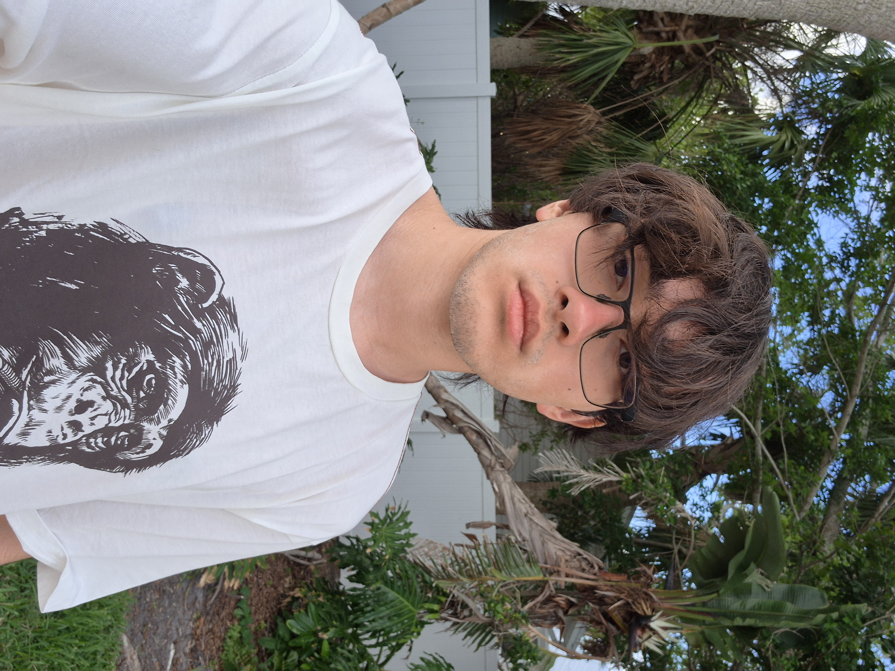

my name is owen; i don't really care how people refer to me, so any pronouns are just fine. i get that my name and how i present are more masculine, but never overthink anything when addressing me. i am who i am.
i am a video editor at heart, and am going to school to study computer science; one of my passions and interests from a young age. i love music. anything underground rap, hyperpop, midwest emo, indie rock, etc. is my go-to. tap in w/ me if you listen to brakence, bunii, or issbrokie!
i am an extremely reserved person, even more so than most introverts (in my opinion). please don't hesitate to reach out, because i probably won't start a conversation first. any patience you show me is greatly appreciated.